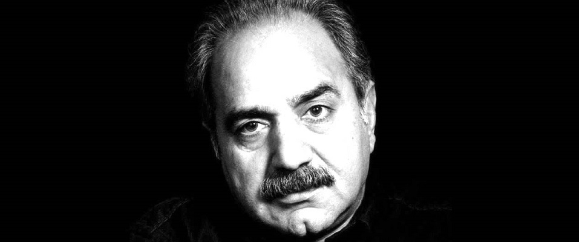
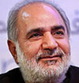
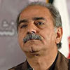
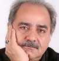
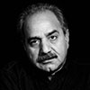

پرویز پرستویی با اصالتی آذری[۴] در روستای چارلی، شهرستان کبودرآهنگ متولد شد. پدر وی کشاورز بود و زمانی که وی ۳ ساله بود به تهران مهاجرت کرد. دوران کودکی و نوجوانی را در یک خانه اجارهای کوچک در محله دروازه غار سپری کرد. او در مدرسه صادقیه اسلامی در کوچه گمرک تحصیلات ابتدایی خود را به پایان رساند. پرستویی با پسانداز کردن یازده هزار تومان خانهای در حوالی ترمینال جنوب خرید. مدتی به ورزش علاقه نشان داد و دروازهبان تیم کارگران بود. پس از این زمان به مرکز رفاه نازیآباد رفت و شروع به آموختن تئاتر کرد. پرویز پرستویی در سال ۱۳۶۰ و زمانی که ۲۶ سال سن داشت به عنوان منشی در دادگستری تهران مشغول به کار شد، امّا پس از مدتی به خاطر علاقهٔ وافر به تئاتر رفت و تا پایان در آنجا مشغول به کار شد. 


